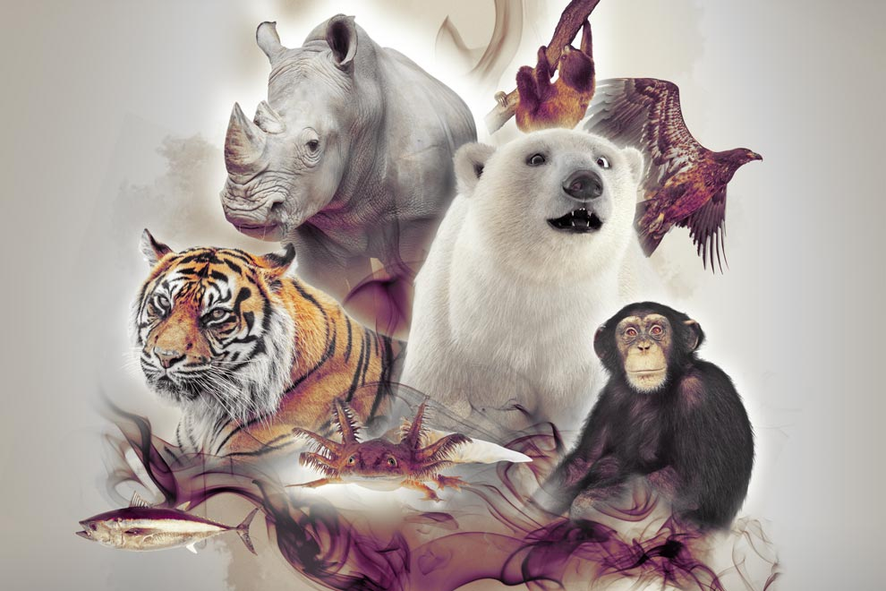

Una especie en peligro de extinción es una especie biológica que está en peligro de desaparecer (extinguirse), ya sea global o regionalmente. Esto puede deberse a la pérdida de hábitat, contrabando de ejemplares silvestres o acción de especies invasoras.
Antes, la gente apenas se preocupaba por ello, matando tantos animales como necesitaba para obtener comida, pieles y otros muchos recursos derivados de los animales. A medida que la población y el comercio crecían, el número aumentaba, lo que más de una vez llevó a la extinción de algunas especies. No fue hasta mediados del siglo XV cuando la gente se preocupó de que los cotos de caza estuvieran a veces vacíos, y fue entonces cuando se empezaron a imponer las primeras restricciones a la caza. Sin embargo, dicha prohibición tenía un objetivo diferente: continuar con la caza una vez recuperado el número de animales. Las primeras prohibiciones de la caza y otras crueldades con los animales no se promulgaron antes de finales del siglo XIX, cuando incluso en la propia Europa empezaron a desaparecer algunas especies: el bisonte casi se extinguió, en 1627 desapareció el toro.

Cuatro razones para preocuparse por la extinción:
La extinción de especies es un factor crítico tanto por la reducción de la riqueza de la naturaleza como por una cuestión moral para quienes creen que los humanos tienen el deber de preservar el entorno natural (así como para quienes creen que las especies animales tienen derechos legales). La "desestabilización" se entiende bien cuando un eslabón de la cadena alimentaria desaparece del ecosistema. Cuando una especie desaparece, es muy frecuente que se produzcan cambios poblacionales en la abundancia de las especies secundarias. Puede darse una situación en la que el ecosistema cambie de forma notable e irreversible.